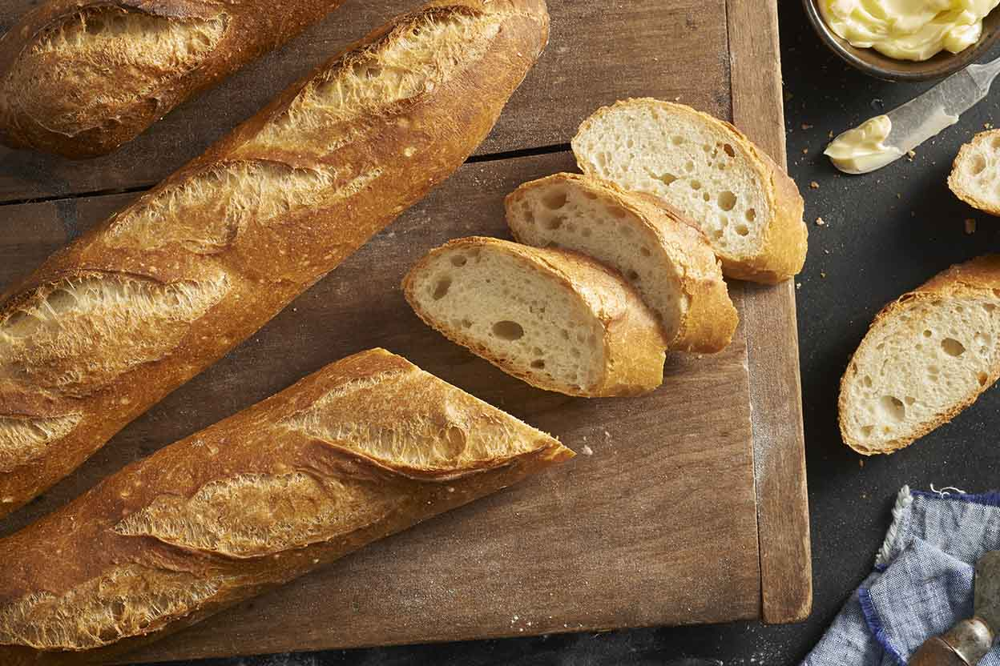

Portion Guide : Potatoes, bread, rice, pasta and other starchy foods
You should eat some starchy foods every day as part of a healthy, balanced diet. They are a good source of energy and the main source for a range of nutrients in our diet.
Choose wholegrain options such as whole wheat pasta and brown rice where possible as they contain more fibre, vitamins and minerals.
How much is one portion of potatoes?
Nine oven chips.
Figure 1.1 : Oven Chips.
One fist-sized baked/jacket potato.
Figure 1.2 : Jacket Potato.
One plantain.
Figure 1.3 : Plantain.
Three tablespoons of mash.
Figure 1.4 : Tablespoon og mash.
Two egg-sized new or boiled potatoes.
Figure 1.5 : Boiled potatoes.
One small brown roll.
Figure 1.6 : Brown roll.
1 Brown bread.
Figure 1.7 : Brown bread.
Half a brown pitta bread.
Figure 1.8 : Pitta Bread.
Three crackers.
Figure 1.9 :Three crackers.
Half a wrap.
Figure 1.10 : Wrap.
One whole crumpet.
Figure 1.11 : Crumpet.
A piece of baguette the length of a hand.

Figure 1.12 : Baguette.
Half an English muffin.
Figure 1.13 : English muffin.
Half a bagel.
Figure 1.14 : Bagel.
Two crispbreads.
Figure 1.15 : Crispbreads.
Two heaped tablespoons of rice.
Figure 1.16 : Rice.
Two tablespoons of cous cous.
Figure 1.17 : Cous cous.
Two tablespoons of cooked pasta.
Figure 1.18 : Pasta.
One handful of spaghetti.
Figure 1.19 : Spaghetti.
Half a pack of egg noodles.
Figure 1.20 : Egg noodles.
Three rice cakes.
Figure 1.21 : Rice cakes.
One Weetabix.
Figure 1.22 : Weetabix.
One tablespoon of granola.
Figure 1.23 : Granola.
Two tablespoons of muesli.
Figure 1.24 : Muesli.
Three tablespoons of porridge, or 27g of uncooked porridge oats.
Figure 1.25 : Porridge.
Three tablespoons of cornflakes.
Figure 1.26 : Cornflakes.